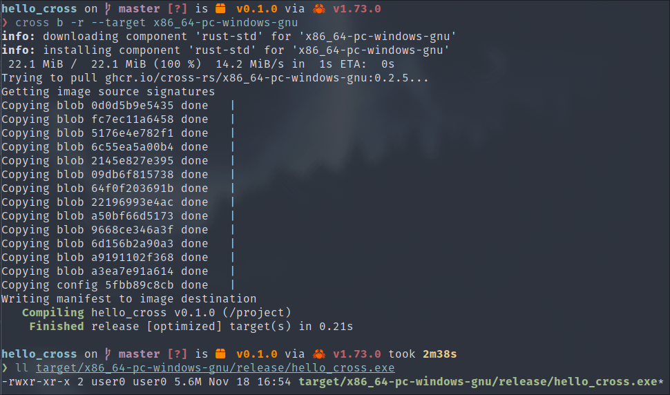

When we develop code written on our local machine, compilation produces an executable specific to the platform on which we are working. However, in many scenarios, it is necessary to deploy the application on embedded systems, remote servers or devices with different architectures or operating systems. This is where cross-compilation comes in.
Cross-compilation is a technique that allows code to be compiled for a different system, providing the flexibility for developers to create applications for a variety of hardware architectures without the need for a dedicated development environment for each target.
By using cross-compilation in Rust, we as malware developers can compile our source code on a development machine, which is generally more powerful, and then generate an executable that is compatible with all our targets, including Linux and Windows for the purposes of this course. This greatly increases our attack surface.
In this part of the course on cross-compilation in Rust, we will explore the basic concepts, the tools available and the best practices for taking full advantage of this approach in the development of cross-platform malware.
To do this, we'll start with this simple :
.
├── Cargo.lock
├── Cargo.toml
├── src/
├── main.rs
Source :
fn main() {
println!("Hello, world!");
}
As indicated in the Cargo optimisation course, the toolchain is the chain of tools used to compile our program in Rust.
Rustup, the toolchain management tool, allows us to install toolchains for other platforms, such as Windows:
$ rustup toolchain install stable-x86_64-pc-windows-gnu
However, this requires you to install the ‘MinGW’ compiler for Windows beforehand, which can be a little complicated on Linux depending on your distribution.
Then compile our program by telling Cargo to use this toolchain in the :
$ cargo build --target x86_64-pc-windows-gnu
And that's it, we've successfully compiled our program for Windows, and the executable can be found here:
target/x86_64-pc-windows-gnu/debug/hello_cross.exe
To test it, we can, for example, run it with the Wine emulator.
To avoid having to install Windows compilation dependencies on our machine, there is a ‘cross’ tool to simplify the cross-platform compilation phase. It relies on a system of Docker or Podman containers to embed all the necessary dependencies for each toolchain.
To install it, you can use the Cargo manager or your distribution's packager, if available:
$ cargo install cross
Then simply re-execute the command to compile our program, replacing ‘cargo’ with ‘cross’ : 
It will download the image linked to the specified platform, then compile your program. If you need to test your program with ‘cross run’, it will run it directly with Wine within the container.
It goes without saying that the precompiler knows which platform it is compiling for, which is why we are going to make use of the ‘cfg!’ macro to optimise our code for cross-compilation.
We're going to modify the source code of our project to display a string of characters depending on the platform on which it's being run:
fn main() {
let plateform = "Linux";
if plateform == "Linux" {
println!("Hello Linux !");
} else if plateform == "Windows" {
println!("Hello Windows !");
} else {
println!("Unsupported plateform");
}
}
You can see straight away that in this version, we are obliged to change the contents of the ‘platform’ variable if we want to compile the program for Windows. Here is the corrected version using the ‘cfg!’ macro :
fn main() {
if cfg!(target_os = "linux") {
println!("Hello Linux !");
} else if cfg!(target_os = "windows") {
println!("Hello Windows !");
} else {
println!("Unsupported plateform");
}
}
And that's it, our code is now cross-platform. But it can also be optimised more efficiently by using the global macro ‘#[cfg()]’ with this example:
#[cfg(target_os = "linux")]
static HELLO: &str = "Hello Linux !";
#[cfg(target_os = "windows")]
static HELLO: &str = "Hello Windows !";
fn main() {
println!("{}", HELLO);
}
Now we're going to demonstrate the use of the global macro ‘#[cfg()]’ on a slightly more complex structure to simulate the architecture of a real project:
.
├── Cargo.lock
├── Cargo.toml
└── src
├── main.rs
├── linux
├── lib.rs
└── mod.rs
└── windows
├── lib.rs
└── mod.rs
// src/linux/lib.rs
pub fn print_hello() {
println!("Hello Linux !");
}
// src/windows/lib.rs
pub fn print_hello() {
println!("Hello Windows !");
}
// src/linux/mod.rs AND src/windows/mod.rs
mod lib;
pub use lib::print_hello;
// src/main.rs
#[cfg(target_os = "linux")]
mod linux;
#[cfg(target_os = "windows")]
mod windows;
#[cfg(target_os = "linux")]
use crate::linux::print_hello;
#[cfg(target_os = "windows")]
use crate::windows::print_hello;
fn main() {
print_hello();
}
With this structure, we can correctly separate our cross-platform code, with the ‘print_hello’ function common to each platform.
We invite you to read the official reference on conditional compilation in Rust for a full list of possibilities:
https://doc.rust-lang.org/reference/conditional-compilation.html
If we use the same project to produce our malware on Linux and Windows, it is normal for certain dependencies to apply only to the platform in question.
To separate the dependencies between platforms correctly, Cargo provides us with the ‘cfg’ macro in the configuration of the ‘Cargo.toml’ file:
// Cargo.toml
[package]
name = "hello_cross"
version = "0.1.0"
edition = "2021"
[dependencies] # Dépendances communes
anyhow = "1.0.75"
[target.'cfg(windows)'.dependencies]
windows = "0.52.0"
[target.'cfg(linux)'.dependencies]
libc = "0.2.150"
In this example, ‘anyhow’ is compiled for all platforms, ‘windows’ for the ‘Windows’ platform and ‘libc’ for the Linux platform.
You now have everything you need to start developing malware that will run on more platforms.